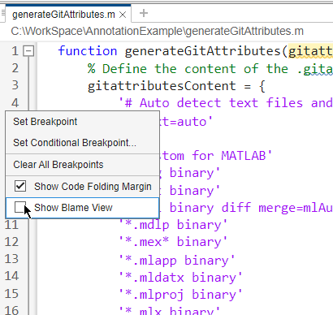
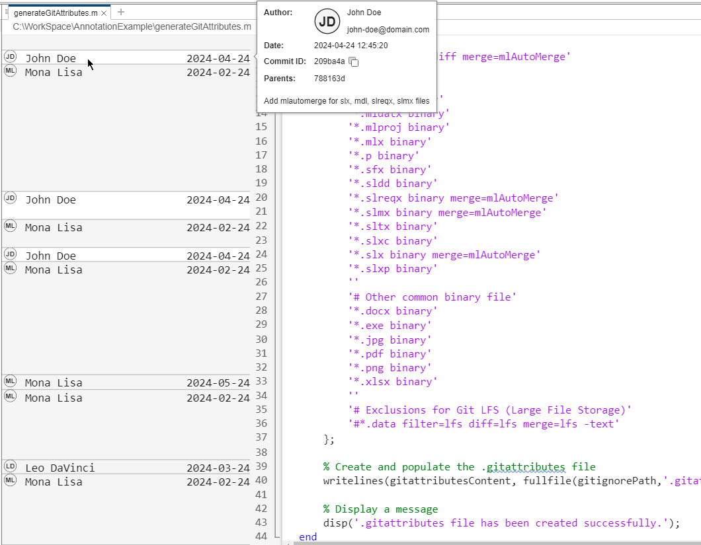
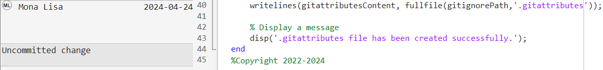

Annotate Lines in MATLAB Editor Using Git History
View the line-by-line revision history for an entire MATLAB® file under Git™ source control using the Blame View in MATLAB.
For teams working on shared codebases, annotating files allows contributors to:
Identify lines of code that have been added or revised, which is useful for identifying the source of new bugs.
Determine why lines of code have been added or revised by viewing commit messages and their authors.
Collaborate effectively by facilitating discussion that directly references the author and the revisions.
Tip
When authoring commit messages, be clear and descriptive. Clear messages make annotations more useful by providing context for each change.
Enable Blame View
To enable line-by-line annotation for a file under Git source control, open the file in the MATLAB Editor. Then, in the left side of the editor, right-click and select Show Blame View.
Note
MATLAB supports annotating lines only for text-based files such as
.m, .cpp, and .c
files.

Alternatively, in the Files or Project panel, right-click and select Source Control > Show Blame View.
Investigate Line Changes
When you enable line annotations for a file under Git source control, the left pane in the MATLAB Editor shows the author names and submission date for every line in the file. The annotation also shows an avatar next to the author name.
By default, MATLAB Git integration generates avatars using the authors initials. If you have a globally recognized avatar, you can enable MATLAB to retrieve avatars from web services such as gravatar.com. For more information, see Configure Git Settings.

For more information about a line change, click the line annotation to show the author username and email address, date and time of the commit, commit message, and commit ID.
If you enabled signing commits, when MATLAB verifies a commit signature, a green verification icon
 also appears next to your username. To enable signing commits,
see Enable Signing Commits.
also appears next to your username. To enable signing commits,
see Enable Signing Commits.
If you have local changes that you did not commit yet, the corresponding line annotation shows Uncommitted change.
